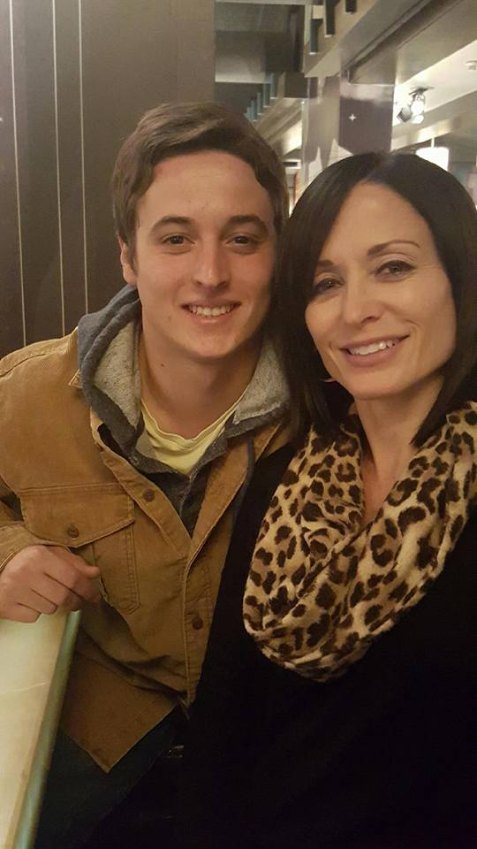
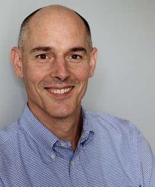

Kamiar Alaei Kamiar Alaei, MD, DrPH, MPH, MS.
is the Associate Dean for Global and Interdisciplinary Research, public service professor in the Department of Public Administration
and Policy, and the founding Director of Global Institute for Health and Human Rights.
He is an expert on HIV/AIDS, drug policy and International Health and Human Rights. He and his brother Arash co-founded the first
"Triangular Clinic" for three target groups in Iran (drug users, HIV patients, and STD cases), documented by the World Health Organization
as a "Best Practice Model" for HIV/AIDS and injecting drug users prevention and care. Dr. Alaei’s extensive experience
in both global health policy and international human rights law allows him to focus on the intersections between international health
and international law, while remaining sensitive to the needs and realities of vulnerable target groups including rights of prisoners.
Kamiar Alaei Kamiar Alaei, MD, DrPH, MPH, MS.
is the Associate Dean for Global and Interdisciplinary Research, public service professor in the Department of Public Administration
and Policy, and the founding Director of Global Institute for Health and Human Rights.
He is an expert on HIV/AIDS, drug policy and International Health and Human Rights. He and his brother Arash co-founded the first
"Triangular Clinic" for three target groups in Iran (drug users, HIV patients, and STD cases), documented by the World Health Organization
as a "Best Practice Model" for HIV/AIDS and injecting drug users prevention and care. Dr. Alaei’s extensive experience
in both global health policy and international human rights law allows him to focus on the intersections between international health
and international law, while remaining sensitive to the needs and realities of vulnerable target groups including rights of prisoners.
His area of expertise, focusing on HIV/AIDS policy and drug policy through an academic perspective with a concentration on the central America, Middle East and Central Asia. In addition to WHO/CAIRO, he has served as a consultant or temporary advisor to the World Health Organization in Pan American Region (PAHO) to expand health and human rights training programs in prison system. Kamiar Alaei received his Medical Doctorate (MD) from Isfahan Medical University and his Master of Public Health (MPH) in epidemiology from Tehran Medical University – two of the top universities in Iran – his Master of Science in International Health from Harvard University, and his doctoral degree on Health Policy and Management from University at Albany. He is currently completing his degree in International Human Rights Law at University of Oxford.
Arash Alaei M.D. is the Associate Vice Provost for International Education, and Associate Director of the Institute. He is a physician who broke the existing national silence regarding HIV/AIDS in a very conservative Muslim country like Iran with the help of his brother Kamiar Alaei using the Triangular Clinic model. He and his brother extended their work on HIV/AIDS in other countries such as Afghanistan and Tajikistan by implementing regional training workshops. They have been successful in motivating other Muslim countries to break the existing silence regarding HIV/AIDS by inviting them to visit their Triangular Clinics in Iran.
Dr. Alaei and his brother promoted their scientific collaborations with American experts through establishing regional workshops on HIV/AIDS and inviting well known international experts from Harvard, Yale and Maryland to be partners in these programs. He also continued his cooperation with U.S. scientists to foster medical diplomacy between Iran and the U.S. The brothers also organized summer exchange programs for American students to visit Iran and work with Iranian students on various health and human rights related projects. This international student network strongly influenced Americans and second generation Iranians living in the US by cultivating youth interest in Iran.
In recognition of their work, Dr. Arash Alaei and his brother Kamiar were awarded the Jonathan Mann Award for Global Health and Human Rights by the Global Health Council in June 2011 and World Health Organization/PAHO gave its first Health and Human Rights awards to them in December 2012.
Alexandra R. Harrington J.D., LL.M., Doctor of Civil Law, is assistant director and affiliated faculty at the Global Institute for Health and Human Rights. She is also adjunct faculty at Albany Law School, where her classes focus on international law topics. Dr. Harrington serves as Lead Counsel for Cross-Cutting Legal Issues with the Centre for International Sustainable Development Law.
Her more than three dozen publications address a variety of fields relating to international law, including international human rights law, international child’s rights, environmental law, legal issues relating to climate change, natural resources regulation, international organizations, international trade law, corporate social responsibility, and criminal law, as well as domestic fields such as constitutional law and military law. She routinely presents her works at domestic and international conferences, including a United Nations Academic Impact in Action panel. Dr. Harrington has served as a Visiting Professor at Albany Law School, a professor at the University of Montreal Centre d’Etudes et de Recherches Internationales summer programs, as a Consultant to the Commission for Environmental Cooperation of the North American Agreement on Environmental Cooperation, and is an ICTSD Expert for the International Centre for Trade and Sustainable Development.
Joe Juan MD, MPH, MA, a PhD student in the School of Criminal Justice, was advised by Dr. Hemenway and Dr. Loftin for research on youth violence, and Dr. Awerbuch and Dr. Levins on social determinants of health as well as mathematical models of epidemics. After receiving Taiwan's National Scholarship for Criminology and Cognitive Neuroscience, in 2013 he received Master's degrees from both Harvard School of Public Health and the School of Criminal Justice at UAlbany. In 2014 he was invited as a guest researcher at Center for Disease Control and Prevention (CDC) to analyze how youth violence at the nation level can be effectively prevented. His research interests mainly focus on substance abuse, social determinants of health, and youth violence prevention. Currently he is collaborating on several NIH-funded programs that address HIV/AIDS risk and epidemics among youth, women, older adults, and injecting drug users across multiple nations.
Mahnaz Alaei, MS, is the Web Developer as well as the Information Systems Assistant at the Global Institute for Health and Human Rights. After receiving her Bachelor's degree in Computer Engineering as well as the Master's degree in Computer Science, she is currently creating several online learning platforms where health professionals and outreach workers can attend online courses to advance their skills and continued training in the field of global health and international law. To facilitate the learning process, these online courses incorporate state-of-the-art technology and provide visual and audio teaching components in multiple languages.
GIHHR International Health and Human Rights Fellow
Dr. Mahmoud Aldyab is the founder and head position for Mobility Solutions, is a physician from Syria that is currently a visiting scholar at the Global Institute for Health and Human Rights. He is a recipient of the Van Heuven Goedhart-Penning Award from a Dutch Human Rights Organization, who gives this award bi-annually to “extraordinary people who are very committed to refugees and displaced persons". Dr. Mahmoud has experience working for the Physicians for Human Rights, Qatar Red Crescent, and Unified Medical Syrian Bureau.
Gihhr International Health and Human Rights Interns
Joe Walsh is a sophomore at the University at Albany Honors College. He has a Biology major with minors in political science and bioethics. He has been involved with the GIHHR since the fall of 2015 and has assisted in several grant proposals. He is currently working on a project to enhance health law capacity in the Middle East. After receiving his undergraduate degree, Joe plans on attending law school with interests in patent law and bioethics.
Michelle Deocampo is an undergraduate senior at the University at Albany, where she is pursuing degrees in Social Welfare and Globalization Studies. Inspired by eye-opening experiences in the Philippines and in Cambodia, she developed a passion for human rights in the developing world. At GIHHR, Michelle is involved in a project aiming to enhance health law capacity in the Middle East, health diplomacy initiatives, and serves as a mentor to freshman students of Global Medicine and Human Rights Living-Learning Community. Michelle is also active within the university as President of Peace Action, Founder of the Pathways to College Refugee Mentorship Program, and member of Phi Alpha Honor Society for Social Work. After graduation, Michelle aspires to earn a MSW and MPA, and work for macro-level change through an international organization.
Nawshin Ahmed is a senior from Goshen, NY. She is currently attending Albany College of Pharmacy & Health Sciences and is majoring in Health & Human Sciences. She is hoping to pursue a Masters in Public Health after graduation. Nawshin is also interning with the American Cancer Society's Cancer Action Network where she has helped research New York State health initiatives. At GIHHR, Nawshin has helped develop grant proposals by researching HIV and its stigma in the Middle East, HIV and its correlation to osteoarthritis, as well as HIV & its correlation to cancer. With the help of GIHHR, she is now developing a grant researching the need for long-term care among the aging HIV/AIDS population.
Josh Cucueco is a sophomore at the University at Albany from Clifton Park, New York. He is pursuing a major in Biology with a minor in Spanish. Josh has been a part of the GIHHR since the Fall of 2015 and is currently working on the ethical, legal, and policy issues in HIV of certain key populations like injecting drug users, men who have sex with men, and sex workers. He is also the World Ambassador for the GIHHR’s Living- Learning Community: Global Medicine and Human Rights. Working at the GIHHR has widened his perspective in global health issues and furthered his passion in social justice and human rights. After graduating, Josh hopes to attend a medical school to pursue a career in clinical hematology.
Morgan DeVuyst is senior majoring in Human Biology and double major in Psychology with a Medical Anthropology Minor. Morgan is from Clifton Springs, N.Y., a small town in Upstate New York. At the University at Albany, Morgan is involved with the Pre-Med Club, Red Cross Club and is currently a Co-Service Chair of the National Society of Collegiate Scholars UAlbany Chapter. She is also the Community Assistant for the Global Medicine and Human Rights Living Learning Community. Morgan has taken an interest in human rights, particularly from the health perspective, as she plans on attending a physician assistant program after her undergraduate career. After taking Health and Human Rights: An Interdisciplinary Approach, she took an interest in how health can be better integrated as a human right, and how it can be realized for all people. Her most recent research project is “Health and Human Rights Indicators for HIV/AIDS in regards to Injecting Drug Users.
Rachel Eager is a sophomore in the Honors College at University at Albany. She is majoring in Biochemistry and Molecular Biology, with a minor Political Science and Women’s Gender and Sexuality Studies. She intends to go to medical school and study Women’s Health. She has been involved in many groups on campus including Presidential Honors Society and Student Association. In addition she has been working at the Global Institute of Health and Human Rights for six months now and has participated in many rewarding projects with the institute.
Christina Ehert is from Rockland County, NY. She is a senior undergraduate student at SUNY Albany majoring in human biology with a minor in medical anthropology and is excited to be apart of the Global Insitute for Health and Human Rights! She wishes to go on to either Physician Assistant school or graduate school to obtain a degree in medical anthropology or public health research.
Sarah Heath is a senior from Ithaca, NY, majoring in Human Biology with a minor in Psychology. These interests grew from her love of learning about how the body and mind work from a young age. She is very grateful for her time at GIHHR because it fostered an academic interest in public health and human rights. After graduating, Sarah hopes to become either a neonatal nurse, or an art therapist.
 Natalina Iamarino
is currently an undergraduate senior at SUNY Albany double majoring in Globalization Studies and Geography and double minoring in Business
and Criminal Justice. With a life-long passion for global affairs, her specific interests include health and human rights, sanitation and
water rights. Her most recent research focuses on longevity patterns, specifically in Sub-Saharan Africa and Japan. Post undergraduate career,
Natalina aims to pursue a Masters in International Affairs and aspires to work with UN affiliated programs, promoting multilateral diplomacy.
Natalina Iamarino
is currently an undergraduate senior at SUNY Albany double majoring in Globalization Studies and Geography and double minoring in Business
and Criminal Justice. With a life-long passion for global affairs, her specific interests include health and human rights, sanitation and
water rights. Her most recent research focuses on longevity patterns, specifically in Sub-Saharan Africa and Japan. Post undergraduate career,
Natalina aims to pursue a Masters in International Affairs and aspires to work with UN affiliated programs, promoting multilateral diplomacy.
September Johnston is currently an undergraduate student at the University at Albany, studying public health with a double minor in psychology and educational studies. Within the GIHHR, September serves as the Intern Coordinator and has worked on multiple projects including researching health and human rights indicators with regards to HIV/AIDS and she is currently working on a project that looks at health law in the Middle East. September has been with the GIHHR since the fall of 2014 and her interests within health and human rights include maternal and child health, substance use prevention, HIV/AIDS and education. After receiving her undergraduate degree, September hopes to serve in the Peace Corps and then go on to get her MPH and MSW.
Alexander Klein is a second year MPH student at the University at Albany’s school of public health. Upon receiving his B.S. in psychology from SUNY Oneonta in 2012, he worked as an environmental lobbyist in upstate New York. He has been a member of the GIHHR since Summer ‘14 and primarily focuses on program development in the Middle East.
Caroline Latta is a sophomore from Pelham, New York. She intends to major in Social Welfare and eventually go on to earn her MSW. Her passion for protecting basic human rights across the globe is what brought her to the GIHHR this fall. Currently, she is working on projects involving environmental issues in the Middle East as well as Syrian refugees living in Turkey.
Evanna LeRouge is currently an undergraduate junior at the University at Albany. She is a Human Biology major and a Psychology and Spanish minor. She plans to pursue a dual to pursue a dual MD and MPH degree in the future.
Frankie Rizzo is currently an undergraduate Senior at the University of Albany. He is an intended major in International Relations and Spanish, but also seeks to further his studies in the Arabic language. After wrestling for the University of Albany 2013-14 team, Frankie lived with his family in Seville, Spain studying at the University of Seville to enhance his fluency in Spanish. In the Fall of 2014, Frankie worked with Dr. Alaei on the NYS Ebola Task Force team Medical Specialty Group. They then contributed to the GIHHR panel discussion on combating Ebola, working with organizations like PAHO, WHO (Africa), CDC, PHR, and DOH NYS. Other projects involving Ebola (EVD) included a social marketing flyer for all SUNY campuses and research on efficient medical testing to combat Ebola. Currently, Frankie is on a team working to set up a health plan in Uganda with an organization from Harvard (RUN) and is also creating projects on the Syrian Refugee Crisis.
Lindsay Riback is an undergraduate sophomore from Brooklyn, NY. She is a student in the Honor’s College, majoring in Public Health and double minoring in Journalism and History. After completing her undergraduate education, Lindsey plans to pursue an MPH, with a concentration in social behavior and community health, as well as international health. Since taking “Health and Human Rights: An Interdisciplinary Approach,” she has become interested in global health, the right to health and increasing access to care. Lindsey is currently working with Dr. Kamiar Alaei and other interns to develop a grant that assesses the long term care needs of the aging HIV/AIDS population.
Carlos Sosa is a senior majoring public health with a minor in globalization studies at the University at Albany, SUNY. He has always been interested in global affairs with regards to health. This interest has been stoked by the time Carlos spent time in Latin America, where he saw first-hand how people in the developing world live. He has had the opportunity to gain experience working with the disaster preparedness team at the American Red Cross. In the future, Carlos hopes to pursue a MPH in Global Health.
Natalie Turner is a junior from Poughkeepsie, New York majoring in Social Welfare with a double minor in Neuroscience and Psychology. She started working for the GIHHR in January 2015. After earning her BSW from UAlbany, Natalie plans on attending graduate school for her MSW. Interning at the GIHHR has piqued Natalie's interest in health, especially on how it is related to human rights. In the future she plans on working as a social worker in the health field.
Jordan Tymeson is a freshman at the University at Albany. She is pursuing a Biology degree and minoring in Spanish in French. After earning her Bachelor's degree, Jordan plans on attending medical school. Jordan is interning at GIHHR because she is passionate about researching and finding ways of resolving global health issues. Her areas of favorite study are environmental health and sustainable agriculture. She joined the GIHHR in Summer 2014 and is working on developing connections between environmental issues, health and human rights.
Amanda S. Volk is a senior Public Health major and Biology minor student from Niskayuna, New York. She has been working at the GIHHR since May 2015 and is currently working on a project investigating injection drug using women in Malaysia. She is on the E-board of the University at Albany’s Students for Health and Human Rights club and is a Purple and Gold Student Ambassador. After earning her bachelor’s degree she hopes to go on and obtain and MPH in Environmental Health Sciences. Her goal is to become an environmental epidemiologist.
Katie Waye is a senior at the University at Albany and its Honors College. She is completing a Bachelor of Science in Public Health and a minor in Public Policy. Katie has spent nearly two years working at the GIHHR. She has had the opportunity to conduct research and subsequently assist in writing several grant proposals for the country of Turkey. She is currently applying to graduate schools and intends to receive a dual MPH/MBA with a global health concentration. She hopes to one day work for an international organization that is dedicated towards alleviating the health struggles of certain underrepresented populations like that of women, MSM, and drug users.
GIHHR International Health and Human Rights Alumni
Jennifer Abu is a sophomore at the University at Albany (SUNY). Her intended major is globalization with a double minor in public health and international affairs. After visiting Nigeria in 2013, Jennifer wanted to learn more about ways of improving the public’s health and educate people on healthier, better ways of living. Her dream is to build a free educational and health clinic in her village, Otukpa, for families in need.
Ayoade Adeyemi is currently a graduate student at the School of Public Health, SUNY at Albany. He previously spent three and a half months educating indigenous populations in Northern Tanzania on topics ranging from HIV/AIDS prevention, sustainable agriculture, nutrition, and safe sanitation methods. Ayoade has also gained valuable experience interning for a global healthcare strategic consulting firm focused on transforming healthcare systems in emerging markets and developing economies. Ayoade is in the MPH program to become better educated on topics such as infectious diseases, health disparities, and maternal/child health. His goal is to use the knowledge gained to work with local NGO's to better health care access and quality in developing countries. His interests include global/international health, health disparities and health communication.
Alyson Alonzo is a sophomore from Westchester, NY majoring in Psychology with a minor in Neuroscience. Aside from interning at the Global Institute for Health and Human Rights, she was also initiated into the Alpha Xi Delta Women’s Fraternity in the spring of 2014 and became a member of Doctors 4 Hope, an organization on campus which provides opportunities such as volunteering space at local hospitals and clinics and research opportunities with the faculty in the RNA Institute. Alyson became interested in Human Rights as a junior in high school and established a club called the Human Rights Coalition, where she worked to raise money for an institution in Uganda for orphans whose parents died of HIV/AIDS.
Erika Corsi is a first semester transfer student to University at Albany. She is an Urban Planning Major with a double minor in Geography and Anthropology, and wants to create sustainable living communities in large cities in the future. Erika joined the GIHHR in the Fall 2014 semester.
Allison Daley is a senior at SUNY Albany where she is majoring in Public Policy with a concentration in economics and public administration. She plans on joining Americorps after graduation and working in economic development.
Dyiamond Grant is currently a senior at the University at Albany. She is majoring in Public Health with a concentration in Global Health and Environmental Sciences and has a minor in Education. She plans on studying aboard in the Middle East or Africa and then continuing on to get her MPH in environmental health sciences. She joined the GIHHR in the Fall of 2015 studying pollution in the Middle East.
Justine Wright is currently a senior at the University at Albany, majoring in Human biology with a minor in French. She plans to pursue a Master’s in Public Health with a concentration on global health. Justine had the opportunity to Study abroad doing community health and medical outreach, which motivated her to learn more about international health policy and research.
Umadevi Yokeeswaran is a third year student here at the University at Albany currently majoring in Spanish and Public Health with concentrations in environmental sciences and epidemiology with a minor in Health and Human Rights. She plans of furthering her education in Global Health and Human Rights hoping to work with NGOs in the future to tackle health disparities in foreign nations. Umadevi has been apart of GIHHR since Spring 2014.
Princy Abraham is a second year law student at Albany Law School. She spent the summer between her first and second years of law school working on issues relating to immigration and is interested in both immigration and international law as well as health and human rights. Princy is an officer of the Society for International Health and Human Rights at Albany Law School and began working with the GIHHR in Summer 2014. Her research has focused on Guatemala.
Eno-Obong Essien is a second year student at Albany Law School. She is the Project Director of the pro bono project between the GIHHR and Albany Law School and is the President of the Society for International Health and Human Rights at Albany Law School. Eno has been a part of the GIHHR since Spring 2013. She has produced a report on the Dominican Republic and is completing a report on Haiti.
Cecilia Hassett is a third year student at Albany Law School. She is a member of the Society for International Health and Human Rights at Albany Law School and has been a part of the GIHHR since Fall 2013. Cecilia has produced a report on Costa Rica as well as assisted in the founding of the GIHHR's climate change and environment research prong.
Nitara Hall is a junior at the University at Albany, majoring in Human Biology/Pre-Med. She plans on attending Medical School after college to become a cardiologist. She became an intern at Global Institute for Health and Human Rights starting Fall 2014 semester. She is currently working on creating a network between students from the State Universities in New York and students from Universities in Turkey.
John Hogan is a student in the J.D./M.B.A Healthcare Management program between Albany Law School and Union Graduate College. He holds a B.A. in Political Science. Jack has experience in the fields of healthcare management and plans to work in healthcare compliance following graduation. He joined the GIHHR in Fall 2013 and has produced a report on Brazil. He is an officer of the Society for International Health and Human Rights at Albany Law School.
Nakissa Jahanbani is the Research and Programs Associate at the Institute. She graduated from American University in 2011 with a Bachelor's of Arts in International Relations, specializing in the Middle East and International Development. Nakissa came to the Institute after working at Physicians for Human Rights' Anti-Torture Program. She has been interested in human rights since a young age and hopes to soon work in the field as well as attend law school.
Alexis Kutski is a third year law student at Albany Law School. Alexis received her B.A. in Political Science with a minor in Spanish from Russell Sage College located in Troy, NY. She is very passionate about family law, matrimonial law, and domestic violence law, and would like to eventually have a career relating to those fields. Alexis has interned for e3communication, the Columbia County Attorney’s Office, the Honorable Mark Powers of Schenectady Family Court, and is now currently a summer law fellow at The Legal Project. In the fall of 2013, Alexis was admitted under a student practice order in the Albany Law School Health Law Clinic where she worked on social security denial cases, social security overpayment cases, and an adoption case. Alexis has been working with GIHHR since February of 2014 and plans to continue working with them throughout her last year at Albany Law. She is an officer of the Society for International Health and Human Rights at Albany Law School. Alexis joined the GIHHR in Spring 2014 and has produced reports on Bolivia and Venezuela.
Michelle Lauetta is a freshman at the State University of New York at Stonybrook. She joined the GIHHR in Summer 2014 and conducted research on issues relating to HIV/AIDS generally, as well as HIV/AIDS related education in the African context, and issues in access to HIV/AIDS drugs in Africa.
Michelle Lopez is a J.D. student at Albany Law School. She has been a part of the GIHHR since Spring 2014 and has produced a report on Argentina.
Jolevette Mitchell is a second year law student at Touro College Jacob D. Fuchsberg Law Center in Central Islip, N.Y. . She attended Saint Peter’s College (now Saint Peter’s University) in Jersey City, N.J. where she obtained a Bachelor of Arts in Political Science in May 2009. Prior to attending law school, Jolevette worked for Deutsche Bank as a Compliance Consultant performing investigations in the Anti-Money Laundering and Business Risk group. She then went on to join Morgan Stanley in its Legal and Compliance Division handling the “Know Your Customer” reports under the US PATRIOT ACT and the opening of accounts with a primary focus in Latin America. While at Morgan Stanley, Jolevette was a member of the Legal and Compliance Diversity Committee, Sub-Committee Member for Women’s Initiative Group and High School intern program (Legal Outreach); Pride and Ally Networking Group, Women’s Business Alliance. Most recently she was employed by J.P.Morgan Chase & Co. in the Investment Banking division and a member of the JPM Pride network. Jolevette currently serves as the Regional Treasurer for NEBLSA where she is responsible for the carrying out proper financials, accounting and audit procedures and for the overall financial health of the region. She will serve as President of the Society for International Health and Human Rights at Touro College Jacon D. Fuchsberg Law Center. Jolevette has been a part of the GIHHR since Spring 2014, and has produced reports on health and human rights conditions in Cuba and Venezuela. Mary Beth Moran is a second year student at Albany Law School concurrently earning her Master of Business Arts in Healthcare Management through Union Graduate College. A practicing occupational therapist, Mary Beth earned a Master of Science in Occupational Therapy at Sage Graduate School and a Bachelor of Science in Studio Art at Skidmore College.
Mary Beth is a member of the Society of International Health and Human Rights and is looking forward to upcoming ProBono work with the Global Institute of Health and Human Rights. She hopes to pursue a career in health law with a focus on health administration, policy, and the economics of health care. Away from school and work, Mary Beth spends every waking moment outdoors with her two loves: husband, Matt, and puppy dog, Charley. She has been a part of the GIHHR since Summer 2014 and is currently researching health and human rights practices in Mexico.
Katherine Mosquera is a J.D. student at Albany Law School. She joined the GIHHR in Spring 2014 and has produced a report on Colombia.
Casey M Schur is a sophomore in the Honors College at the University at Albany. She is a double major in Public Health and Political Science with a concentration in Global Politics. She has also completed a minor in Biology. She plans on completing her education for global health issues.
Eric Snyder is a freshman at Tufts University. He joined the GIHHR in Summer 2014 and conducted research on issues relating to HIV/AIDS generally, as well as HIV/AIDS related education in the African context.
Anais Vasquez is a 3L at Albany Law School, concentrating in International Lawl. She holds Bachelor's in International Affairs from Skidmore College (minor in Law and French) and has previously studied abroad in South America (Argentina and Chile) and worked abroad (Spain). While in law school, her internship experience has been within the public sector, working for public interest firms, on areas like disability and housing advocay, as well as immigration and asylum law. She hopes to work in immigration law - primarily in the area of asylum - after graduation from law school. Anais joined the GIHHR in Summer 2014 and has produced a report on Honduras.
Nate Rousseau is an undergraduate Business student at the University of Maryland. He joined the GIHHR in Summer 2014 and worked on outreach for potential partners and funders as well as HIV/AIDS education policy research.
Ellie Warner-Rousseau will be a senior at Bethlehem High School in the fall. She is interested in international development and public health, making GIHHR an ideal work environment to learn and gain experience as an intern. She joined the GIHHR in Summer 2014 and conducted research in a number of areas, including health and human rights and HIV/AIDS related issues in Africa.
Katie Waye is an undergraduate freshman in the Honors College at University at Albany. She is a double major in Public Health and Public Policy with a minor Health and Human Services. She hopes to one day receive a Masters in Global Public Health and work with initiatives in health care accessibility.
Emily Wolfe is a senior at the University at Albany studying International Relations and Spanish Literature. During the Spring semester of 2014, she was accepted into a combined BA/MA program and will graduate with her Masters in Spanish linguistics in 2015. She hopes to remain within academia for as long as she is able to, and will someday use her education to work with International Organizations and Human Rights Law.
Uma Yokeeswaran is currently an undergraduate sophomore student at the State University at Albany. She currently doubling majoring in Spanish and Public Health with concentrations in Epidemiology and Environmental Sciences and has a minor in Biology. She plans on continuing her education for Global Public Health and Epidemiology.
Ajay Gupta M.D was a full-time intern for the Institute in 2013. He is originally from Delaware and went to college at the University of Pennsylvania with a dual major in English and Biology. After 2 years in Washington DC at the NIMH, he moved to Albany to pursue an M.D. at Albany Medical College. His work has been instrumental in getting the institute up and running. After graduating from Albany Medical College in 2013, he started residency at Miami Children’s Hospital in Florida.
Asi-Yahola Somburu was full-time intern for the Institute in 2013. He is a medical student at Albany Medical College, originally from San Francisco, CA. While an undergraduate at Tufts University (2005), he majored in American Studies concentrating on Social Justice, Inequality and Public Health. He went on to earn a Masters Degree in Biomedical Science at Tufts University (with a concentration on bacterial viruses), and a Masters in Public Health at Boston University (with concentrations in International Health and Infectious Disease) before moving to Albany to pursue his lifelong dream of becoming a doctor for the people. He first learned of the Alaei brothers and their work in 2009 during an internship at Physicians for Human Rights, and looks forward to staying involved with the work of the Institute as he moves forward on his medical degree.
Ruhi Al-Ahmed was an intern for the Institute. She is originally from NYC and is currently a student at Rockefeller College of Public Affairs & Policy at the University at Albany. She's working on her Bachelor's in Political Science (concentration in International Affairs) with a minor in Criminal Justice, expected 2013. Ruhi is currently working at the New York State Office of the State Comptroller, Thomas DiNapoli as a Student Assistant. In addition, she's worked on various research projects independently and with SUNY. Ruhi also enjoys volunteering for the community.
Kenneth Aduba was an intern with the Institute, holds an MBBS degree from Nigeria, and is currently studying for a MPH in Health Policy and Management at UAlbany School of Public Health. He is interested in the interaction between health policies and economics. He likes making new friends, listening to classical music and intellectual discussions.
Dut Lwal was an intern with the Institute and an MPH student in Epidemiology and Biostatistics at UAlbany School of Public Health. He is originally from Sudan, and has lived in Kenya for 12 years and is an active member of SUNY Albany African Student Organization Active Club Member. His interest is in infectious disease outbreak investigation. After finishing his studies, Dut plans to go back to his home country to help his community.
Faraz Khan was a full time intern for Institute in 2013. He is beginning medical school at Albany Medical College. Born in Houston, Texas and raised in Edison, New Jersey, he went to Union College in Schenectady, New York. At Union, he completed his Chemistry and Economics degrees. He became interested in human rights and health during college, and he hopes to stay active in the work of the Institute as he looks to complete his MD.
Emily von Werlhof graduated cum laude from Albany Law School in 2014 with a concentration in International Law with Honors, and earned her B.A. from the University of Washington. Emily was the inaugural student project director of Albany Law School's Global Health and Human Rights pro bono project in the 2013-14 school year. Starting in the Fall of 2014, Emily will be pursuing her LLM in Human Rights Law at Queen Mary, University of London.
Brett Williams is a 2014 graduate of Albany Law School. He joined the GIHHR in Fall 2013 and produced reports on Belize.
Robert Kolar holds a BA from Duquesne University (1982) and a Juris Doctor from Albany Law School (2014). He works for a software development company, CommSoft, in Albany, NY. He oversees and manages CommSoft’s Client Services team. He is responsible for three CommSoft units that impact the customer’s on-going relationship with CommSoft: Quality Assurance, Documentation, and Client Support Services. He also is the primary legal resource at CommSoft, assisting in licensing, negotiations, and intellectual property matters. Kolar has more than 30 years of management experience in technical, sales, retail and service environments. He has brought to CommSoft extensive knowledge of how to build and leverage support groups, use evaluations and training to develop the capabilities of entire teams, and apply reporting and tracking mechanisms to increase productivity and customer satisfactions. Previously with Rite-Aid Corporation, Tele-Media Corporation, and Cap Gemini Sogeti, Kolar has served as Field Systems Support Supervisor, Sales Manager, and Account Director. He joined the GIHHR in Fall 2013 and produced a report on Argentina.
Neill Michael recently graduated from Albany Law School in 2014 with a concentration in International Law. Prior to his studies at Albany Law, he attended Saint Joseph's University in Philadelphia where he studied English Literature, French, and Philosophy. He has previously held positions at the Tribunal de Grande Instance de Cergy-Pontoise, France, the Albany Law Clinic & Justice Center and has provided research on language rights for Canadian Parents for French. Neill continues to provide research to the GIHHR and currently works at Johnston Law in Toronto, Canada. He joined the GIHHR in Fall 2013 and produced a report on Trinidad & Tobago.
Advisory Board
Executive Director, Centro Civico of Amsterdam
Joseph Amon
Director of Health and Human Rights Division, Human Rights Watch
President and Dean, Albany Law School
Director/Professor, JHU Center for Public Health and Human Rights
Professor, SUNY Professor of Epidemiology, School of Public Health, SUNY
Professor, Harvard Dept. of Global Health
Actress, Spokesperson for Amnesty International USA
SVP, Global Strategic Development, Lumira, USA, Inc.
Former Chair of Human Rights, NY Academy of Sciences
Director/Professor USC Program on Global Health and Human Rights
Associate Professor, Yale University School of Public Health
President, John Snow, Inc.
Professor, Johns Hopkins University, Bloomberg School of Public Health

Former Vice President, Asia Society
Executive Director, PEN American Center

Professor of Medicine, Brown University
Director of International Policy and Partnerships, Physicians for Human Rights
Assistant Professor, Icahn School of Medicine at Mount Sinai
Board of Directors
 Victor Asal, PhD
- Director of the Center for Policy and Research/Associate Professor, Political Science
Victor Asal, PhD
- Director of the Center for Policy and Research/Associate Professor, Political Science
Victor Asal is Director of the Center for Policy Research and an Associate Professor in the Department of Political Science and the director of the Homeland Security Certificate and MPA Concentration in the Department of Public Administration and Policy. He received his PhD from the University of Maryland, College Park. He is also, along with R. Karl Rethemeyer, the co-director of the Project on Violent Conflict. Dr. Asal is affiliated with the National Consortium for the Study of Terrorism and Responses to Terrorism (START), a Department of Homeland Security Center of Excellence. Dr. Asal’s research focuses on the choice of violence by non-state organizational actors as well as the causes of political discrimination by states against different groups such as sexual minorities, women and ethnic groups. In addition, Prof. Asal has done research on the impact of nuclear proliferation and on the pedagogy of simulations. Asal has been involved in research projects funded by the Defense Advanced Research Projects Agency, Defense Threat Reduction Agency, The Department of Homeland Security, The National Science Foundation, and The Office of Naval Research.
Katherine Briar-Lawson, PhD - Dean/Professor, Social Welfare.
Katharine Briar-Lawson is an experienced academic administrator and national expert on family focused practice and child and family policy. Among her books (co-authored) are Family-Centered Policies & Practices: International Implications (2001) and (co-edited) Innovative Practices with Vulnerable Children and Families (2001). She has recently co-edited two volumes on Evaluation Research in Child Welfare, (2002) and Charting the Impacts of University-Child Welfare Collaboration, (2003). She is a member of the Council on Social Work Education Practice Commission; she also serves as associate editor for the New Global Development: Journal of International and Comparative Social Welfare, and is consulting editor for Social Work, as well as Family Preservation. She Co-Chairs the Gerontological Task Force for the National Association for Deans and Directors.
Ray Bromley, PhD - Vice Provost for International Education/Professor, Geography and Planning
Ray Bromley joined the faculty of UAlbany’s Department of Geography and Planning in 1985 and has served as Vice Provost for International Education since 2006. Born and raised in rural England, he did his BA and PhD degrees at Cambridge University specializing in Social Geography, Regional Development, and Latin American Studies. Before joining the Albany faculty, he taught social and regional planning for ten years at Swansea University in Wales, and he worked nine years as an urban researcher and planning consultant in Latin America. He has authored or edited six books and numerous articles on these subjects. At UAlbany he has been a recipient of the President’s and Chancellor’s Excellence in Teaching Awards, the President’s Excellence in Academic Service Award, and the Graduate Student Organization’s Outstanding Professor Award. Ray has worked as a consultant on World Bank, United Nations, UNICEF and USAID–funded projects, and to the Governments of Peru, Ecuador and Bolivia, New York State, and New York City.
 David O. Carpenter, MD
- Professor, Environmental Health Sciences, School of Public Health, UA
David O. Carpenter, MD
- Professor, Environmental Health Sciences, School of Public Health, UA
Dr. Carpenter, a professor of environmental health and biomedical sciences and the founding dean of the University at Albany School of Public Health, researches and advocates for the elimination of environmental contaminants, including pesticides, lead, PCBs, particulate air pollution, and electromagnetic radiation. Dr. Carpenter serves as director of the Institute for Health and Environment at the School of Public Health. He previously served as director of the Wadsworth Laboratory of the New York State Department of Health, and was named to New York's Renewable Energy Task Force, charged with implementing plans to reduce electricity use through new energy efficiency programs in industry and government.In addition to his research on environmental contaminants, Dr. Carpenter studies animal models of stroke and neurodegenerative diseases and neurotoxic agents. He devotes time to national and international activities in environmental health, and has served on the National Advisory Committee of the National Institute of Environmental Health Sciences (NIEHS), and on the Great Lakes Science Advisory Board of the International Joint Commission. Dr. Carpenter received his medical degree from Harvard Medical School. He has more than 370 peer-reviewed publications, 6 books and 50 reviews and book chapters to his credit.
Harvey Charles, PhD - New Vice Provost and Dean of International Education.
Harvey comes to UAlbany from Northern Arizona University where he currently serves as vice provost for international initiatives and director of the Center for International Education. He has also served in senior international education leadership roles at Georgia Institute of Technology, San Francisco State University, Wheaton College and the University of Nevada, Reno. He earned his Ph.D. in Higher Education and Student Affairs from The Ohio State University, an M.A. in Counseling and Guidance from Andrews University, and a B.A. in Business Administration from Caribbean Union College, Trinidad. Harvey has also published a number of peer-reviewed articles among other publications and given many keynote speeches, conference presentations, and workshops on topics including comprehensive internationalization, global learning and internationalizing STEM education, both in the US and at venues around the world. He is Past President of the Association of International Education Administrators, the world’s only organization dedicated to the professional development of leaders in the field of international higher education, and he sits on a number of international education boards and advisory committees. Under Harvey’s leadership, Northern Arizona University won the 2012 Senator Paul Simon Award for Comprehensive Internationalization.
Douglas Fish, MD - Former Head of Division of HIV/AIDS at Albany Medical College
Douglas Fish, MD is one of the New York/New Jersey AETC's lead correctional trainers. He is Medical Director of the AIDS Treatment Center at Albany Medical Center, and Division Head of the Division of HIV Medicine of Medicine at Albany Medical College (AMC). AMC is the upstate NY local performance site for the NY/NJ AETC and its HIV Correctional Regional Resource Center (RRC). In addition to being an active HIV educator in non-correctional settings, a significant part of Dr. Fish's clinical and educational responsibilities is within NY correctional facilities, which detain the largest number of HIV-infected inmates nationally. Dr. Fish and his faculty members staff approximately 15 HIV specialty clinics per month at Coxsackie Regional Medical Unit, which serves inmates in 24 facilities in upstate New York. He is also the Course Director for clinical educational programs targeting providers at Riker's Island and correctional facilities in New Jersey.
Samantha Friedman, PhD - Associate Professor, Sociology
Samantha Friedman is an Associate Professor and Director of Graduate Studies of Sociology and Associate Director of the Lewis Mumford Center at the University at Albany, SUNY. Her research focuses on name discrimination in the housing market, the racial and ethnic segregation of home owners and renters, and the neighborhood attainment of racial and ethnic groups by their nativity, generational, and familial status. She is also currently studying the impact of housing on asthma and exploring the association between disability status and housing and neighborhood conditions. She is co-author of The Housing Divide: How Generations of Immigrants Fare in New York’s Housing Market (2007) and has published articles in several journals including Demography, Social Problems, Social Science Research, Urban Studies, and Housing Policy Debate.
 Gregory T. Dewey, PhD
- President of Albany College of Pharmacy and Health Sciences.
Gregory T. Dewey, PhD
- President of Albany College of Pharmacy and Health Sciences.
Dr. Dewey became the ninth president of Albany College of Pharmacy and Health Sciences on July 1, 2014. Prior to joining ACPHS, Dr. Dewey served for five years as Provost at the University of La Verne in California, a comprehensive doctoral university that enrolls approximately 8,000 students across four colleges and nine regional campuses. In that capacity, he oversaw academic affairs, student affairs, student services, enrollment management, financial aid, and athletics for the institution. Dr. Dewey previously served as Senior Vice President for Academic Affairs and the Finnigan Chair at the Keck Graduate Institute (KGI) of Applied Life Science in Claremont, CA. As a founding faculty member of this pioneering institute, he played a key role in KGI’s growth during his ten years at the school, including the development of its groundbreaking Master’s of Bioscience program, the first professional master of science program in the country. Dr. Dewey began his academic career in 1982 as an Assistant Professor at the University of Denver and eventually rose to the rank of full professor. He spent 18 years at Denver, including five years as Chair of the Department of Chemistry and Biochemistry.
Alan J. Lizotte, PhD - Dean/Professor, Criminal Justice.
Alan Lizotte's substantive interests include guns and gun control, the correlates and causes of juvenile delinquency and the factors related to various forms of victimization. He enjoys applying statistical and mathematical models to these problems. He has published extensively on these topics. His recent publications include: Gangs and Delinquency in Developmental Perspective (2003), New York: Cambridge University Press, by Terence Thornberry, Marvin Krohn, Alan Lizotte, Carolyn Smith, and Kimberly Tobin. This book won the American Society of Criminology’s Hindelang Award for the Most Outstanding Contribution to Research in Criminology in 2003; "Causes and Consequences of Delinquency: Findings from the Rochester Youth Development Study" by Terence Thornberry, Alan J. Lizotte, Marvin D. Krohn, and Carolyn Smith and Pamela K. Porter in Taking Stock in Delinquency: An Overview of Findings from Contemporary Longitudinal Studies (2003), , Terence P. Thornberry and Marvin D. Krohn (eds.) New York: Kluwer Academic/Plenum Publishers, pp. 11-46; The Delinquency of Children Born To Young Mothers: Results from the Rochester Youth Developments Study,. Criminology, Vol. 41, No. 4, pp. 1249-1286, 2003; and "Linked Lives: The Intergenerational Transmission of Antisocial Behavior" in Jounal of Abnormal Child Psychology, Vol. 31, No. 2, pp. 171-184,(2003), by Terence Thornberry, Andrienne Freeman-Gallant, Alan J. Lizotte, Marvin Krohn, and Carolyn Smith.
Jon Mandle, PhD - Chair/Professor, Philosophy
Department Chair and Professor, received his PhD from the University of Pittsburgh. His primary interests are in political philosophy and ethics and their history. He is the author of Rawls's A Theory of Justice: An Introduction (2009), Global Justice (2006), What's Left of Liberalism? An Interpretation and Defense of Justice as Fairness (2000). He has published work of John Rawls, Kant, Rousseau, globalization, naturalism, and other topics. He teaches courses on contemporary ethical and political philosophy, global justice, 17th-19th century ethical theory, and the history of political philosophy.
Philip Nasca - Dean of School of Public Health School of Public Health Dean
Philip Nasca has served as a member of numerous grant review boards for national agencies, including the National Cancer Institute and the American Cancer Society. Previously, he worked with the New York State Department of Health, where he held a number of positions, including director of the Bureau of Cancer Epidemiology. He currently serves on the editorial board of both the Journal of Public Health Management and Practice and the Annals of Epidemiology. Nasca was appointed dean of the School of Public Health in 2007.
 Vivien Ng, PhD
- Chair/Associate Professor, Women’s Studies.
Vivien Ng, PhD
- Chair/Associate Professor, Women’s Studies.
Vivien Ng is Associate Professor and Chair of Women's Studies at the University at Albany, SUNY. Prior to joining the Women's Studies Dept. in Fall 1995, she taught Chinese history and women's studies at the University of Oklahoma for 13 years. She earned her Ph.D. in Chinese History at the University of Hawaii. She was Chair of the Women's Studies Department from 1995 to 2000 and Associate Dean for Undergraduate Education from 2005-2010. She began her second stint as Department Chair in Fall 2011. Ng was the first President of the National Women's Studies Association, serving in 1993-94. She has served on the board of the American Association of University Women Educational Foundation from 1989-93. She was a Mellon Fellow at the Aspen Institute for Humanistic Studies in 1984-85 and a Rockefeller Fellow at Hunter College in 1990-91. She has served on the editorial boards of the NWSA Journal and the Journal of Women's History. Ng is currently working on documentary projects. She is the principal researcher and associate producer for the documentary film, "Trailblazers In Habits," a film about the work of the Maryknoll Sisters in Hong Kong. You can follow the progress of this work on the website http://www.trailblazersinhabits.net. Her second project is about Maryknoll Sisters' medical ministry, with special focus on the life and work of Sr. Mary Mercy Hirschboeck.
Alicia Ouelette, JD - Dean and Professor, Albany Law School.
Alicia Ouellette, the Associate Dean for Student Affairs, is also a Professor of Law at Albany Law School and a Professor of Bioethics in the Union Graduate College/Mt. Sinai School of Medicine Program in Bioethics. Her research focuses on health law, disability rights, family law, children’s rights, and human reproduction. Her book, Bioethics and Disability: Toward a Disability Conscious Bioethics, was published in 2011 by Cambridge University Press. She has authored numerous articles published in academic journals such as the American Journal of Law and Medicine, the Hastings Center Report, the American Journal of Bioethics, the Hastings Law Journal, the Indiana Law Journal and Oregon Law Review. She is also a co-editor of the definitive Cambridge Dictionary of Bioethics (forthcoming) (co-edited with Laurence McCullough and Robert Baker). Before joining the law faculty, Professor Ouellette served as an Assistant Solicitor General in the New York State-Attorney General’s office. As ASG, Prof. Ouellette briefed and argued more than 100 appeals on issues ranging from termination of treatment for the terminally ill to the responsibility of gun manufacturers for injuries caused by handguns.
 Dr. William Alex Pridemore, PhD
- New Dean, School of Criminal Justice
Dr. William Alex Pridemore, PhD
- New Dean, School of Criminal Justice
Bill comes to UAlbany from Georgia State University where he currently serves as distinguished university professor in the Department of Criminal Justice and Criminology and as senior researcher in the Cluster on Evidence-Based Policy. Prior to that he worked at Indiana University where he served as assistant professor, associate professor, and professor. While at Indiana he was the founding Director of IU’s Workshop in Methods and served as Director of Graduate Studies in the Department of Criminal Justice for several years.
Some of Bill's research interests include the impact of social structure on homicide and suicide rates, the role of alcohol in violence and mortality, and the sociology of health and illness. He has received numerous awards, including a junior scholar award for his research on alcohol, the Radzinowicz Memorial Prize from the British Journal of Criminology for his research on cross-national homicide rates, and the Mueller Award for distinguished contributions to international criminal justice. He has published nearly 90 peer-reviewed articles and several other edited volumes, book chapters, and reports. Bill has served as PI or co-PI on grants totaling more than $2.5 million.
He earned his Ph.D. in Criminal Justice from the University at Albany and an M.A. in Criminal Justice and B.A.s in Sociology and Criminal Justice from Indiana University. He was a post-doctoral Research Fellow at Harvard University.
Karl Rethemeyer, PhD - Chair/Interim Dean of Rockefeller College/ Associate Professor, Public Administration and Policy
Karl Rethemeyer is Associate Dean of the Rockefeller College of Public Affairs and Policy and Chair of the Department of Public Administration and Policy at the Rockefeller College of Public Affairs and Policy, University at Albany - SUNY. Rethemeyer’s primary research interest is in social networks, their impact on social, political, and policy processes, and the methods used to study such networks. Dr. Rethemeyer’s work spans two programs of research. The first focuses on the structure and operation of collaborative and policy networks in the public sector. This work examines the challenges inherent in the management of collaborative provision of public goods and services and the political ramifications of engaging nonprofit and for-profit organizations in that effort. Most recently Dr. Rethemeyer received the Accenture Advances in Public Management Award for his research in this area. Dr. Rethemeyer’s other program of research focuses on terrorism, terrorist organizations, terrorist networks, and counter-insurgency/stabilization operations. Dr. Rethemeyer is co-director of the Project on Violent Conflict (PVC), a research center focused on these topics. His Department of Homeland Security-funded work focuses on how networks affect the use of various forms of terrorism (including suicide and CBRN attacks), the lethality of terrorist organizations, the propensity of terrorist organizations to attack civilian targets, and the propensity to choose or eschew lethal violence.
 David L. Rousseau, PhD
- Interim Dean of College of Emergency Preparedness, Homeland Security and Cyber security/ Professor, Political Science
David L. Rousseau, PhD
- Interim Dean of College of Emergency Preparedness, Homeland Security and Cyber security/ Professor, Political Science
Professor Rousseau’s research interests focus on military conflict, shared identity, political development, and foreign policy. His first book, which is entitled Democracy and War: Institutions, Norms, and the Evolution of International Conflict (Stanford University Press, 2005), examines the relationship between institutional structures and political norms within international disputes using statistical analyses, historical case studies, laboratory experiments, and computer simulations. His second book, which is entitled Identifying Threats and Threatening Identities: The Social Construction of Realism and Liberalism (Stanford University Press, 2006), explores the impact of shared identity on threat perception. In addition to his book publications, Professor Rousseau has published articles in the American Political Science Review, the Journal of Conflict Resolution, and the Journal of Peace Research. Professor Rousseau received his MPP from the Kennedy School of Government at Harvard University and his PhD in Political Science from the University of Michigan. Prior to arriving at the University at Albany, Professor Rousseau taught at Korea University, the University of Pennsylvania, and the University at Buffalo (SUNY).
 Fardin Sanai
- Vice President for Development/Executive Director of The University at Albany Foundation, University at Albany
Fardin Sanai
- Vice President for Development/Executive Director of The University at Albany Foundation, University at Albany
Fardin Sanai was appointed to the position of Vice President for University Development and Executive Director of The University at Albany Foundation in Fall 2007. Mr. Sanai is responsible for all fund raising, alumni affairs and foundation operations at the University. Before joining the University at Albany, Fardin served as Senior Vice President for Development and Foundation Operations at Albany Medical Center where he oversaw fund raising for both the college and hospital. Through the implementation of his strategic initiatives, every function reported significant growth during his tenure. Fardin also served as secretary for the Albany Prize which is the largest prize in medicine in the United States. Fardin began his fund raising career at Albany Law School where his responsibilities progressed from Gift Coordinator to Director of Institutional Affairs during his six-year tenure. He also spent two years as a fund raising consultant for Morin & Anderson, Inc. where his clients included the Albany Institute of History and Art and Double H Hole in the Woods.
 Lawrence Schell, PhD
- Director of Center for the Elimination of Minority Health Disparities/Professor, Department of Anthropology
Lawrence Schell, PhD
- Director of Center for the Elimination of Minority Health Disparities/Professor, Department of Anthropology
Lawrence M. Schell, Director of the Center for the Elimination of Minority Health Disparities, also is a Professor in the Department of Anthropology and in the Department of Epidemiology and Biostatistics. His research on environmental health focuses on the physical growth and development of children, particularly the effects of pollutants among disadvantaged groups. Put in anthropological terms, his research concerns adaptation, or lack thereof, to urbanism. A corollary theme of his work is the role of socio-cultural factors in health. His recent publications are based on three NIH funded studies: two ongoing studies of Mohawk adolescents and young adults, and an earlier study conducted in Albany, NY investigating influences on lead levels of mothers and infants and the effects of lead on infant development. Recent publications include a paper in Pediatrics on the effects of polychlorinated biphenyls and lead on the timing of human sexual maturation. Other recent publications have detailed the role of maternal diet and body composition on the transfer of lead from mother to fetus, and the influence of infant diet on the infant's acquisition of environmental lead, and the growth and development of Akwesasne Mohawk adolescents. He also has published several reviews on urbanism, pollution and child health. He received his Ph.D. in biological anthropology from the University of Pennsylvania; his B.A. from Oberlin College.
Carol Whittaker, MA, MPA - Former Director of Center for Global Health/Assistant Dean, Global Public Health
Our “flat” globalized world requires all public health students to be aware of the implications of global health and disease patterns and to have opportunities for serving those in resource-restricted countries. As Director of the Center for Global Health, one of Whittaker’s primary responsibilities is to open doors for students and faculty interested in collaborations with partner schools and institutions worldwide for research, internships, and study abroad opportunities. She is interested in expanding our diversity by recruiting international students and finding opportunities for our students to serve abroad through short study tours as well as programs such as the Masters International /Peace Corps Program. As we add global health courses, students will be able to obtain a Certificate in Global Health as a complement to the MPH degree.
Kevin J. Williams, PhD - Vice Provost for Graduate Studies/Dean of Graduate Studies/Professor, Psychology
Kevin Williams joined the faculty of UAlbany’s Department of Psychology in 1987 and has served as Dean of Graduate Studies since June, 2010. Prior to his current role, he served as director of undergraduate advising in Psychology from 1994-2005, graduate director from 2005-2007, and department chair from 2007-2010. He has also been area head for the industrial-organizational psychology and the social-personality graduate doctoral programs. His major areas of research are (1) human motivation and performance, where he studies the self- regulatory processes that guide goal strivings and goal revision over time; (2) the psychology of blame, where his work explores the social-cognitive processes that underlie the allocation of blame for accidents; and (3) employee assessment and appraisal, where his work seeks to identify best practices for assessing and evaluating employee aptitude and performance. His research appears in such journals as Journal of Applied Psychology, Human Performance, Organizational Behavior and Human Decision Processes, and Academy of Management Journal. Williams received his Ph.D. in psychology from the University of South Carolina in 1984.
Edelgard Wulfert, PhD - Dean, College of Arts and Sciences/Professor, Psychology
Professor Edelgard Wulfert works with pathological gamblers at the Center for Problem Gamblers in Albany and the University at Albany’s Center for Stress and Anxiety Disorders. She can offer opinions, commentary and advice for problem gamblers whose addiction leads them from sports teams to scratch tickets, casinos to Keno. Wulfert offers to share her expertise and to explain the science behind the trends. She has been a member of the UAlbany Department of Psychology faculty since 1988. Wulfert is a productive scholar who maintains an active research program and has published and lectured extensively in the field of behavior analysis, with particular research interests in substance abuse and sexual risk behaviors. She earned her doctorate in 1987 from the University of North Carolina, Greensboro.
Affiliated Faculty
 Russ Altone, PhD
Russ Altone, PhD
Associate Professor, Department of Health Policy
Visiting Professor, Department of Health Policy
Assistant Professor, School of Public Health
Assistant Professor, Department of Anthropology
 Jack A. DeHovitz, MD, MPH, FACP
Jack A. DeHovitz, MD, MPH, FACP
Distinguished Service Professor, Department of Medicine
School of Education, Associate Professor
Department of Pediatrics, Division of Pediatric Infectious Diseases

Assistant Professor, University at Buffalo School of Social Work

SUNY Assistant Professor, Department of Epidemiology and Biostatistics
Assistant Professor, Department of Public Administration and Policy
Assistant Professor, Department of Philosophy
Albany College of Pharmacy & Health Sciences
Adam Gonzalez, PhD
Assistant Professor
Director, Addictions Research Center School of Social Welfare

Associate Professor, Department of Health Policy and Management
Alexandra Harrington, PhD
Visiting Professor, Albany Law School
Assistant Professor, Department of Philosophy
Associate Professor of Bioethics Union Graduate College

Professor, City University of Hong Kong
Assistant Professor, Department of Sociology and Criminal Justice
Associate Professor, School of Criminal Justice
Associate Dean, School of Criminal Justice

Executive Director of CWGCS
Professor, Department of Philosophy
Associate Editor, Columbia Journal of Transnational Law
Assistant Professor, Department of Epidemiology
Associate Professor, Department of Sociology
Assistant Professor, Department of Women’s Studies
Associate Editor, Columbia Journal of Transnational Law
Executive Director, Committee of Concerned Scientists